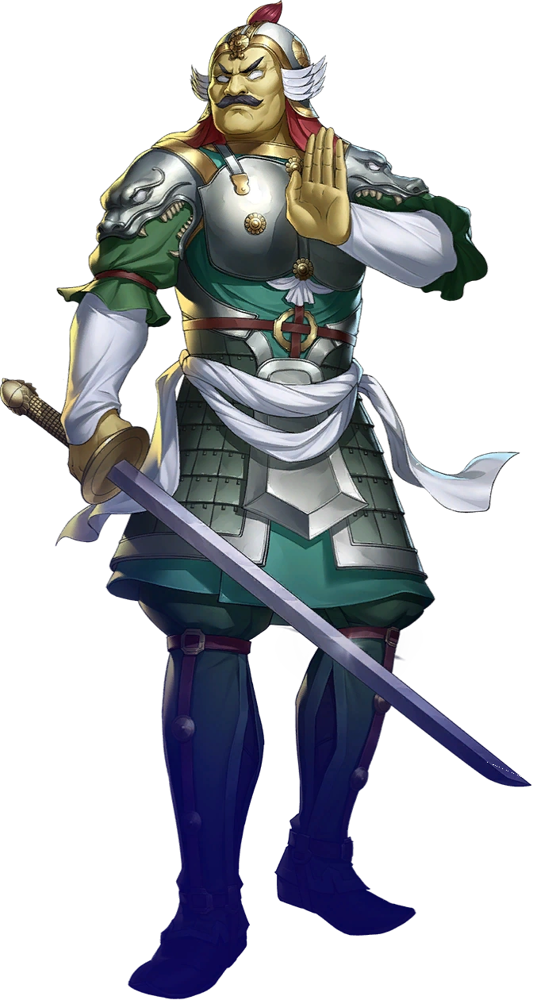
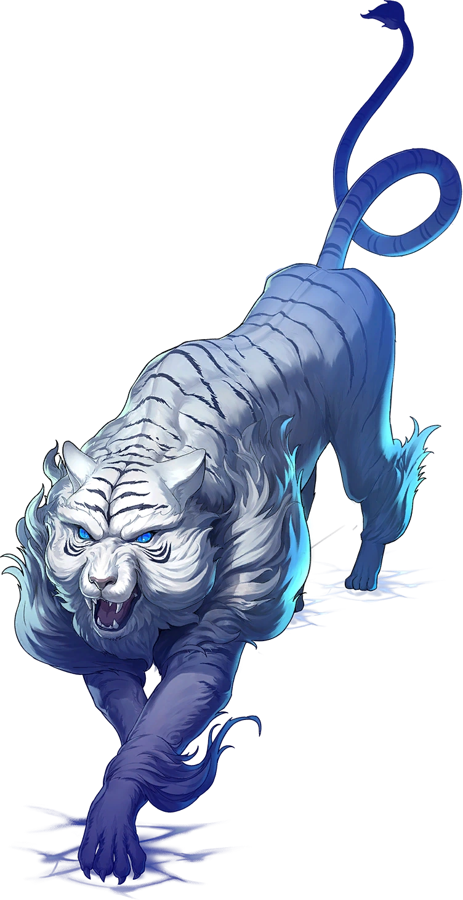
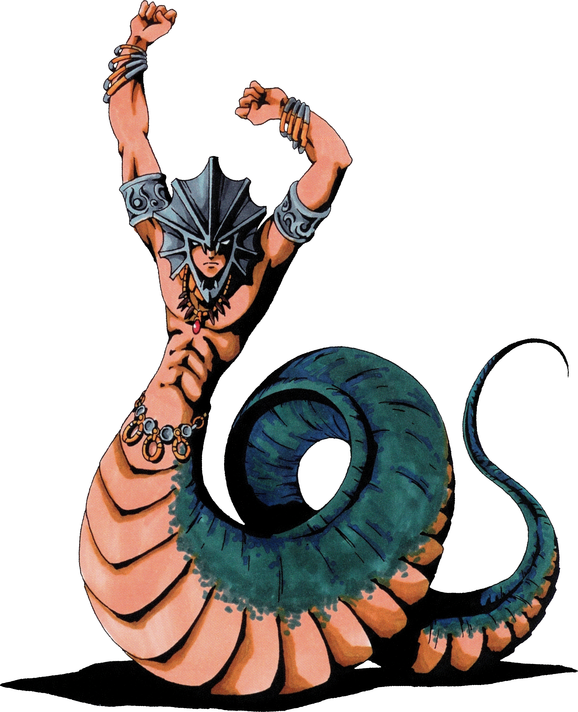
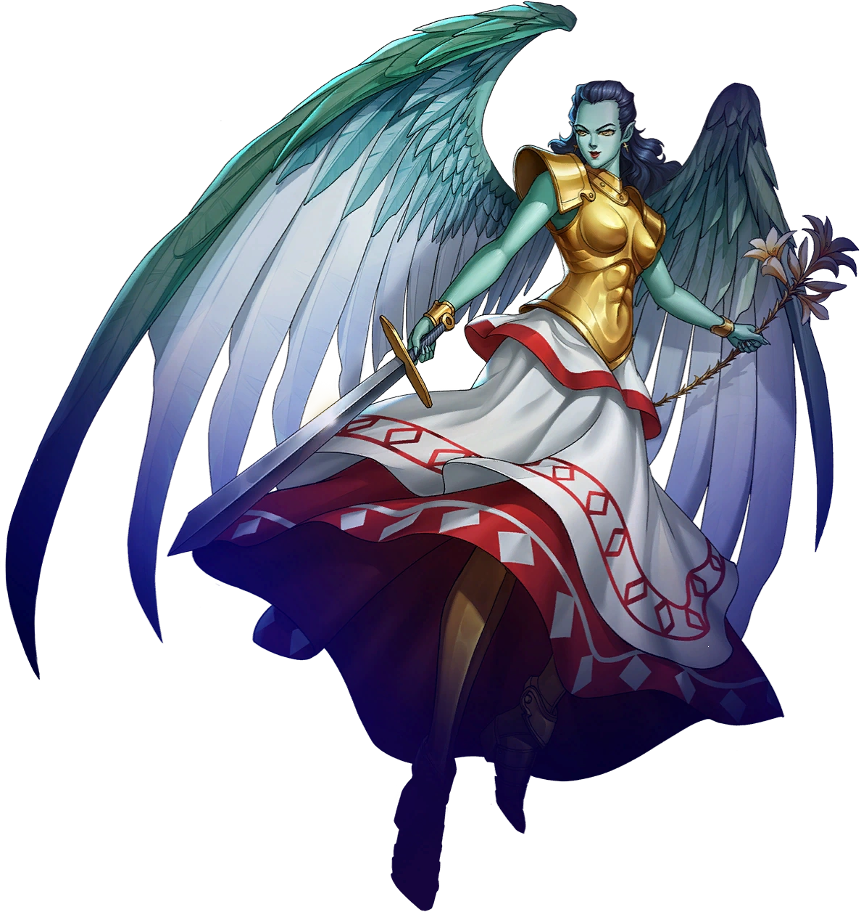
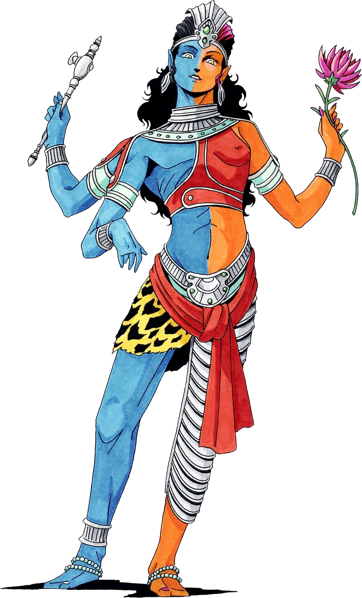

Joker's homeroom teacher at Shujin Academy. She offers help him if Joker
keeps quiet about her job as a maid.
TEMPERANCE ARCANA SKILLS
TEMPERANCE ARCANA PERSONAS
TEMPERANCE ARCANA SKILLS
| Rank | Name | Effect |
|---|---|---|
| 1 | Slack Off | Allows to perform various activities in Kawakami’s class. |
| 2 | - | - |
| 3 | Housekeeping | Allows you to request Kawakami to make coffee or do laundry for you. |
| 4 | - | - |
| 5 | Free Time | Gain free time in other teachers’ classes with Kawakami’s help. |
| 6 | Super Housekeeping | Allows you to request Kawakami to make curry or infiltration tools for you. |
| 7 | - | - |
| 8 | - | - |
| 9 | - | - |
| 10 | Special Massage | Request a massage after going into the Metaverse, letting you go out at night. |
TEMPERANCE ARCANA PERSONAS
Genbu
Koppa Tengu
Makami
 Jikokuten
Mithra
 Byakko
 Naga Raja
 Gabriel
 Ardha